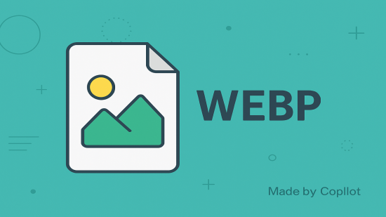

webp를 위한 라이브러리 libwebp 활용

1. 설치
1.1. 직접 다운로드
-
libwebp-1.6.0-windows-x64.zip 항목 참고 다운로드 및 압축 해제
-
환경 변수에 Path 추가
-
설정 확인
Microsoft Windows [Version 10.0.26200.7628] (c) Microsoft Corporation. All rights reserved. C:\Users\user>cwebp -version 1.6.0 libsharpyuv: 0.4.2
1.2. winget 패키지 관리자 사용
$ winget search libwebp
이름 장치 ID 버전 원본
---------------------------------------
libwebp Google.Libwebp 1.6.0 winget
$ winget install -e --id Google.Libwebp
찾음 libwebp [Google.Libwebp] 버전 1.6.0
이 응용 프로그램의 라이선스는 그 소유자가 사용자에게 부여했습니다.
Microsoft는 타사 패키지에 대한 책임을 지지 않고 라이선스를 부여하지도 않습니다.
다운로드 중 https://storage.googleapis.com/downloads.webmproject.org/releases/webp/libwebp-1.6.0-windows-x64.zip
██████████████████████████████ 3.91 MB / 3.91 MB
설치 관리자 해시를 확인했습니다.
보관 파일을 추출하는 중...
보관 파일을 추출했습니다.
패키지 설치를 시작하는 중...
경로 환경 변수 수정됨; 셸을 다시 시작하여 새 값을 사용합니다.
명령줄 별칭이 추가되었습니다. "anim_diff"
명령줄 별칭이 추가되었습니다. "anim_dump"
명령줄 별칭이 추가되었습니다. "cwebp"
명령줄 별칭이 추가되었습니다. "dwebp"
명령줄 별칭이 추가되었습니다. "get_disto"
명령줄 별칭이 추가되었습니다. "gif2webp"
명령줄 별칭이 추가되었습니다. "img2webp"
명령줄 별칭이 추가되었습니다. "vwebp"
명령줄 별칭이 추가되었습니다. "webp_quality"
명령줄 별칭이 추가되었습니다. "webpinfo"
명령줄 별칭이 추가되었습니다. "webpmux"
설치 성공
$ cwebp -version
1.6.0
libsharpyuv: 0.4.2
2. 라이브러리 구성
- (cwebp) WebP 인코더 도구
- (dwebp) WebP 디코더 도구
- (vwebp) WebP 파일 뷰어
- (webpmux) WebP 믹싱 도구
- (gif2webp) GIF 이미지를 WebP로 변환하기 위한 도구
3. cwebp
3.1. 개요
- cwebp [options] input_file -o output_file.webp
- 용례
cwebp -q 50 -lossless picture.png -o picture_lossless.webp cwebp -q 70 picture_with_alpha.png -o picture_with_alpha.webp cwebp -sns 70 -f 50 -size 60000 picture.png -o picture.webp cwebp -o picture.webp -- ---picture.png
3.2. 기본옵션
- -o string
- 출력할 WebP 파일의 이름 지정하며, 생략할 경우 동일 파일네임의 webp 확장자 파일 생성
- -h, -help
- 간단한 사용 요약 정보 표시
- -H, -longhelp
- 가능한 모든 옵션의 요약 정보 표시
- -version
- 버전 번호 (Major.minor.revision) 출력
- -lossless
- 무손실 인코딩으로, 완전히 투명한 이미지의 경우 보이지 않는 픽셀 값 (R/G/B 또는 Y/U/V)은 -exact 옵션 사용
- -q float
- RGB 채널의 압축 계수로, 허용값은 0~100(고품질 100)으로, 기본값은 75
- 손실 압축시 계수가 작으면 저품질의 더 작은 파일이 생성
- -lossless 적용시 계수가 작으면 압축 속도가 빨라지지만 파일 용량 증가
- -z int
- lossless 압축 모드
- 허용값은 0~9(빠른모드 0, 느린모드 9, 기본값 6)
- 빠른모드일 수록 파일 크기 증가
- -q 또는 -m 옵션을 사용하면 이 옵션의 효과 무효
- -alpha_q int
- 알파 압축 계수로
- 허용값은 0~100(기본값 100)
- 값이 작을수록 손실 압축 발생
- -preset string
- 사전 정의된 매개변수를 사용
- 가능한 값 default, photo, picture, drawing, icon, text
- -preset는 다른 매개변수 무력화
- -m int
- 사용할 압축 방법
- 허용값은 0~6(기본값 4)
- 값이 낮을 수록 파일 크기 증가, 처리 시간 단축 및 압축 품질 저하
- -crop x_position y_position width height
- 원본이미지에서 x_position 및 y_position을 시작점으로 크기 width x height로 잘라내어 사용
- 자르기는 크기 조정 전에 적용
- -resize width height
- 원본이미지를 width x height로 늘리거나 줄여 사이즈 변경
- 크기는 자르기 후 적용
- -mt
- 멀티코어 사용
3.3. 손실(lossy) 옵션(-lossless 옵션을 붙일 경우 비적용)
-
-size int
- 지정한 크기 이하가 되도록 압축률 조정
- 값 단위는 bytes
-
-psnr float
- 지정한 PSNR(Peak Signal-to-Noise Ratio) 수준을 유지하도록 압축
- 값 단위는 dB
-
-pass int
- 압축 최적화 반복 횟수
- 허용값은 1~10(기본값 1, 권장값 6)
-
-af
- 자동 필터를 사용 설정으로 최적화에 추가 시간을 할애
-
-jpeg_like 예상되는 크기와 더 잘 일치하도록 내부 매개변수 매핑을 JPEG 압축